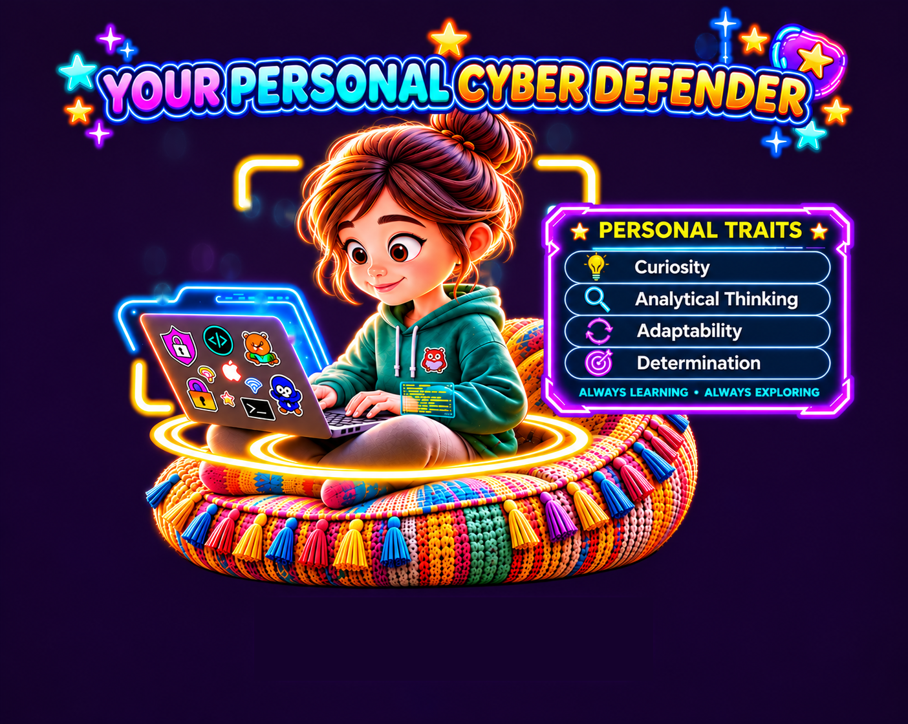

VAPT Report
Did a pentest of a vulnerable Ubuntu machine, from scanning to confirmed exploitation.
NessusMetasploitHashcat
Cybersecurity & Digital Forensics student at Singapore Polytechnic. I find the cracks, follow the trail, and help turn weak spots into strong defences.
▶ VIEW PROJECTSHi, I'm Yap Zhi Ning, a Cybersecurity & Digital Forensics student at Singapore Polytechnic, specialising in offensive security with an elective in IoT.
My interest in cybersecurity started with one question: how do attackers break into people's gaming accounts, and how do they still get caught? I've been chasing the answer ever since.
I'm curious about how systems work, how attackers exploit their weaknesses and how their actions leave traces. I'm always looking for opportunities to solve challenges, explore new technologies and step outside my comfort zone.
Beyond the classroom, I continue to broaden my knowledge through CTFs, personal projects and exploring other areas of technology, such as AI.
My next stage? Turning classroom knowledge into real-world experience, broadening my skills and continuing to level up.
Technical capabilities developed through hands-on laboratories, academic projects and competitions.
Click a project to see what I built.
Did a pentest of a vulnerable Ubuntu machine, from scanning to confirmed exploitation.
NessusMetasploitHashcatExploitation of EternalBlue on an isolated Windows lab machine.
MetasploitOpenVASFour-person project hardening Windows 10 and Windows Server 2022 using CIS Benchmarks.
Windows Server 2022Windows 10Active DirectoryFive-person project building an encrypted Python chat and secure file transfer application.
PythonDiffie-HellmanAES-256-CBCPython and OpenCV system that detects, registers and recognises faces and logs attendance.
PythonOpenCVYuNetPair project monitoring environmental conditions and responding automatically to sensor readings.
PythonSensorsCloud storageFull-stack bakery game with login, shop, timed baking, recipe book and orders.
Node.jsExpressSQLitePython program for testing a smart money concepts trading strategy on historical price data.
PythonExploring cybersecurity beyond the classroom through competitions, programmes and hands-on experiences.
Specialising in offensive security. Coursework and projects include penetration testing and vulnerability reporting (VAPT), applied cryptography through a secure chat application, data protection analysis of the Facebook data leak, and building a bakery web game. Aiming for offensive security or SOC internships.
As Captain of the Badminton CCA, I led a team of 20 members and represented the school in both the C-Division and B-Division South Zone competitions. I also served as Class Leader from 2020 to 2021, supporting my teacher in managing a class of 30 students and keeping the class on track whenever the teacher was away.
Served as Badminton Vice-Captain, leading 7 team members during training and competitions along with the Captain, while actively participating in events organised by other CCAs.
Ready for my next mission: gaining real-world experience, building new skills and growing as a cybersecurity professional. Let's team up!